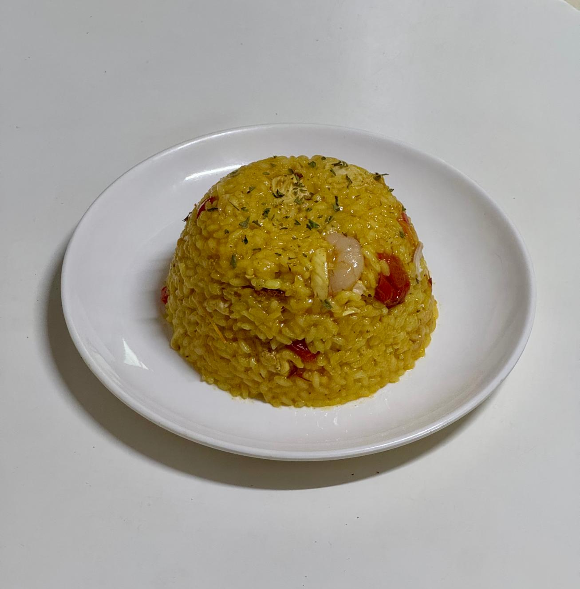

- 파에야 -
스페인 발렌시아 지역의 대표 쌀 요리!

📝 재료
- 쌀 400g
- 토마토 3개
- 파프리카 1개
- 마늘 3쪽
- 물 2L
- 닭고기 반 마리
- 파에야용 향신료 1봉지
- 올리브유
- 소금
🍳 만드는 법
- 피망은 길게 썰고
- 토마토는 갈아서 따로 둡니다.
- 팬에 올리브 오일을 두르고 파프리카, 마늘을 볶은 뒤 덜어줍니다.
- 같은 팬에 닭고기를 넣고 노릇해질 때까지 볶은 다음, 간 토마토를 넣고 다시 볶아줍니다.
- 물 넣고 중불에서 30분간 끓입니다.
- 향신료와 쌀을 넣고 소금으로 간을 맞춰줍니다.
- 처음 10분간은 중강불에 익히고, 파프리카로 장식으로 올립니다.
- 이후 중약불로 쌀이 국물을 모두 흡수할 때까지 익히면 완성.
💡 TIP
한국 쌀은 수분을 잘 흡수하므로, 사용 전 10분 정도 물에 불려두면 좋아요.